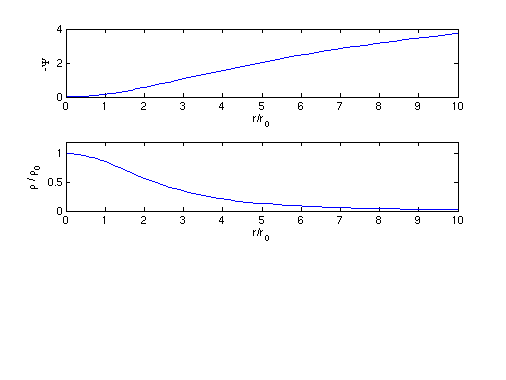
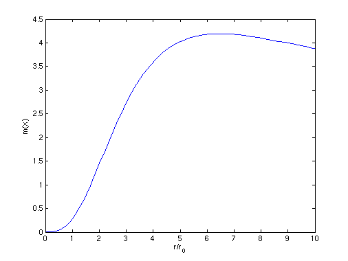

Bonnor-Ebert Sphere Profile
The Lane-Embden equation describes the potential and density radial distribution for a spherically symmetric self-gravitating perfect gas at constant-temperature. The solutions to this equation provide a simple description of astrophysical gas clouds such as molecular clouds which have a fixed outer radius at which the pressure of the cloud must match the surrounding ISM pressure in the equilibrium state. In this example we numerically integrate for a solution to the Lane-Emden equation and plot the scaled density and scaled potential. We also plot the total mass of the cloud in hydrostatic equilibrium as a function of external bounding radius for a given external pressure and show it is consistent with the critical Bonnor-Ebert mass derived in ASTRO 320 or found in textbooks.
Contents
Setup
See BonnorEbertTheory.pdf for a description of how to scale the Lane-Emden equation and separate this 2nd order equation into two simplified 1st order ODEs, thereby making the numerical integration simpler.
% We must define our coupled ODEs in the standard form required by Matlab % integrators. Thus, we define them both in a function f (instead of writing % a whole new file we'll just use a function handle), such that the % function returns an array with the value of the right hand side of each % ODE: f = @(x,psi) [psi(2)/x^2; -x^2 * exp(psi(1))]; %i.e. returns [d\Psi /dx; dy/dx]
Integration and plotting
Our integration is performed using ode45, a medium order solver appropriate for non-stiff differential equations. [0.0001 10] is the range of values of x over which we integrate. [0 0] are the starting values for psi and y respectively
[xa,psia] = ode45(f,[0.0001 10], [0 0]); % Now we are ready to plot the solution: % First we plot the scaled potential (negative comes from definition of $\Psi$ ) figure(1); clf subplot(3,1,1) plot(xa,-psia(:,1)) xlabel('r/r_0') ylabel('-\Psi') % Then plot the scaled density, using the definition: subplot(3,1,2) plot(xa,exp(psia(:,1))) ylim([0 1.2]) xlabel('r/r_0') ylabel('\rho / \rho_0')
Total Enclosed Mass
Since psia contains values of y, which IS the integral in the definition of m(x), we do not need to perform another numerical integral. Our original integral gave us the corresponding values of y in psia(:,2):
figure(2); clf plot(xa, -exp(psia(:,1)/2.0) .* psia(:,2) ) xlabel('r/r_0') ylabel('m(x)') % We can now ask, at what value of x does m(x) have a maximum? % We can use the max() function to give us the maximum and its array index: [maxval,maxindex] = max(-exp(psia(:,1)/2.0) .* psia(:,2)); maxval x_max = xa(maxindex) % value of r/r_0 at the maximum % Note that if we multiply this by 0.282 from the definition of M_c we % recover the constant factor in the Bonnor-Ebert mass shown in textbooks: Const_BE = 0.282 * maxval
maxval =
4.1910
x_max =
6.3835
Const_BE =
1.1819
